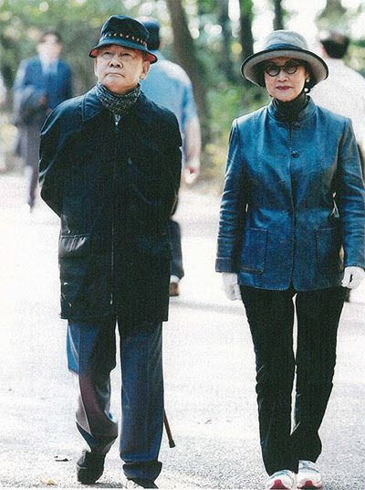
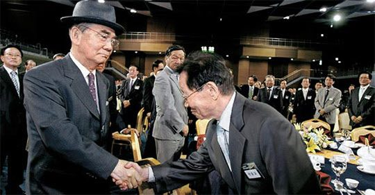
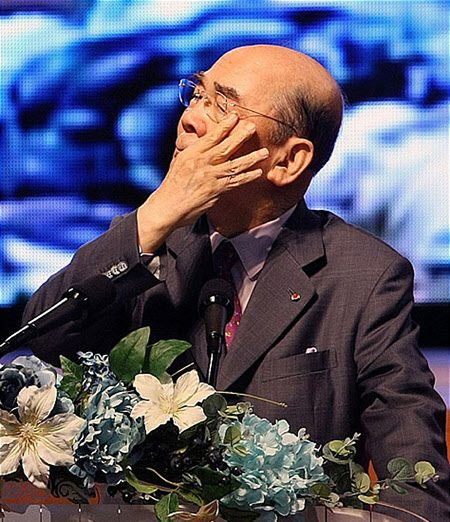

연재일 2015-06-23출처 조선일보 프리미엄조선 연재
<①편에서 계속>
여든네 살의 황혼을 소일하는 박태준의 몸에 귀신처럼 달라붙어 계절이 두어 차례 바뀌어도 도무지 떨어질 줄 모르는 기침, 이 몹쓸 놈을 더 설치게 만들 것 같은 가을이 왔다. 한가위를 맞아 박태준은 고향(부산시 기장군 장안읍 임랑리) 바닷가 생가에 머물고 있었다. 기침이 삿포로에서보다 조금 더 악화된 상태였다. 그러나 그는 한 주일 앞으로 다가온 행사 참여를 포기하지 않겠다고 했다.
포항제철 초창기부터 현장에서 청춘을 불사른, 이제는 같이 늙어가는 퇴역 직원들과의 만남. 그가 회장 자리에서 스스로 물러난 지 19년 만에 이뤄지는 재회. 옛 현장 친구들의 얼굴을 보고 싶다던 그의 의지가 그의 내면에서 소망으로 변모한 것 같았다.

2011년 9월 19일 오후 7시. 포항시 효자동 ‘포스코 한마당 체육관’에 포항제철 초창기부터 현장에 근무했던 퇴직사원 370여 명이 모여 들었다. 이윽고 박태준이 천천히 행사장으로 들어서자 참석자 전원이 일어나서 열렬한 박수를 보냈다. 자리를 벗어나 그의 앞으로 뛰어나온, 어느덧 팔순을 바라보는 몇몇 직원들은 악수를 나누며 벌써 눈물을 글썽이고 목이 메었다.
‘창업 최고경영자와 퇴직 현장 사원’의 19년 만의 재회, 이 행사의 이름은 <보고 싶었소! 뵙고 싶었습니다!>. 말 그대로 보고 싶어 하고 뵙고 싶어 하는 잔치였다. 세계의 기업 역사상 유례를 찾아볼 수 없는, 인간의 이름으로 만들 수 있는 따뜻한 만남이었다.

박태준이 연단에 오르자 드디어 체육관은 눈물의 호수를 이루었다. 아, 이것이 박태준의 생애에 대미를 장식하는 마지막 공식 연설이 될 줄이야! 누구도 알 수 없고 오직 하느님만이 그것을 알고 있어서 누구도 모르게 잠시 그에게 청춘을 돌려준 것이었을까. 그는 연설을 하는 동안 간간이 눈시울을 훔쳤다. 그러나 거의 기침을 하지 않았다.
행사를 마치고 헤어지는 삼삼오오가, “우리 회장님, 대통령에 출마해도 되겠더라”는 즐거운 말을 주고받게 될 만큼 감정의 강약 조절이 자연스러웠다. 감동의 연설이었다. 어쩌면 하느님이 그에게 마지막으로 잠시 청춘을 돌려준 것이 아니라, 그의 영혼에서 우러나온 진심이 그에게 제공한 최후의 힘이었는지…. 그는 간곡히 당부했다.
<우리는 남들이 갖지 않은 특별한 것을 공유하고 있었습니다. 연봉이나 복지보다 더 소중한 정신적 가치, 그것은 제철보국이었습니다. 기필코 회사를 성공시켜서 조국 근대화의 견인차가 되자는 투철한 사명의식을 가슴에 품고, 실패하면 영일만에 빠져 죽자는 ‘우향우’ 정신으로 무장하고 있었던 것입니다.
우리의 그 열정, 우리의 그 헌신, 우리의 그 단결이 마침내 ‘영일만의 기적’을 창출하고 ‘영일만의 신화’를 쓰게 되었습니다. 그러나 우리의 힘만으로는 그 기적, 그 신화를 이룰 수 없었을 것입니다. 저는 언제나 잊지 못하는 사람들이 있습니다. 여러분도 그분들을 기억하고 있을 것입니다.

가장 먼저 기억할 것은, 회사의 종자돈이 조상들의 피의 대가였다는 사실입니다. 대일청구권 자금, 그 식민지 배상금의 일부로써 포항 1기 건설을 시작할 수 있었습니다. 그래서 우리가 외친 ‘제철보국’과 ‘우향우’는 한층 더 우리의 가슴을 적시고 영혼을 울렸을 것이며, 거기서 우리에게 요구되는 고도의 윤리성이 나왔습니다.
고(故) 박정희 대통령을 잊을 수 없습니다. 제철소가 있어야 근대화에 성공할 수 있다는 그분의 일념과 기획과 의지에 의해 포항제철이 탄생했고, 그분은 저를 완전히 믿고 맡겼을 뿐만 아니라, 온갖 정치적 외풍을 막아주는 울타리 역할도 해주셨습니다. 이 사실을 우리는 망각하지 말아야 합니다. 그리고 우리 모두가 간직해야 할 이름들이 있습니다. 여러분의 현장에는 위험이 상존했고, 크고 작은 안전사고가 발생했습니다.
조금 전에도 그분들을 위한 묵념이 있었습니다만, 조업과 건설 중에 유명을 달리하신 분들은 우리의 마음과 포스코의 역사 속에 영원히 살아 있어야 합니다.
사랑하는 직원 여러분.
우리의 추억이 포스코의 역사 속에, 조국의 현대사 속에 별처럼 반짝이고 있다는 사실을 잊지 맙시다. 그것을 우리 인생의 자부심과 긍지로 간직합시다.>